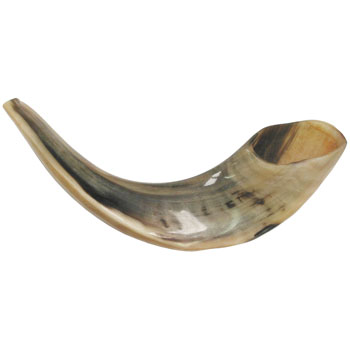

Feed items
Psalm 4:8-9
Księga Hioba 34:10-12
Bóg nie ma nic wspólnego z bezprawiem, Wszechmocny z nieprawością. Owszem, odpłaca On człowiekowi według uczynków i sprawia, że powodzi mu się według jego postępowania. Bo to jest pewne, że Bóg nie popełnia bezprawia i Najwyższy nie łamie prawa. (BW)
Księga Hioba 34:10-12
Księga Hioba 33:14-17
Wszak Bóg przemawia raz i drugi, lecz na to się nie zważa: We śnie, w nocnym widzeniu, gdy głęboki sen pada na ludzi i oni śpią na swym łożu. Wtedy otwiera ludziom uszy, niepokoi ich i ostrzega, aby odwieść człowieka od złego czynu i uchronić męża od pychy. (BW)
Księga Hioba 22:23-28
Jeżeli w pokorze nawrócisz się do Wszechmocnego i oddalisz nieprawość ze swego namiotu, jeżeli w proch rzucisz złoty kruszec i między kamienie potoków złoto z Ofiru, jeżeli Wszechmocny będzie twoim złotem i srebrem pełnym połysku dla ciebie, wtedy Wszechmocny będzie twoją radością i podniesiesz ku Bogu swoje oblicze. Gdy będziesz się do niego modlił, wysłucha cię, i swoje śluby spełnisz. Cokolwiek postanowisz, uda ci się, a nad twoimi drogami zabłyśnie światło. (BW)
Jeszua - Jezus

Jeszua (ישוע) (ang. Yeshua) – tak brzmi imię naszego Zbawiciela w języku hebrajskim.
Takie właśnie imię kazał nadać Mu sam Bóg, jak czytamy w Ewangelii Mateusza 1:20, 21:
„I gdy nad tym rozmyślał, oto ukazał mu się we śnie anioł Pański i rzekł: Józefie, synu Dawidowy, nie lękaj się przyjąć Marii, żony swej, albowiem to, co się w niej poczęło, jest z Ducha Świętego. A urodzi syna i nadasz mu imię Jezus; albowiem On zbawi lud swój od grzechów jego.” (BW)
Istotnie, hebrajskie JESZUA oznacza dosłownie: ZBAWIENIE – właśnie o tym mówił anioł.
Pełna wersja tego imienia to Jehoszua – czyli: JHWH (יהוה) zbawia.
Zatem imię ישוע - Jeszua ma określone znaczenie tylko w języku hebrajskim. Przetłumaczone z języka greckiego imię: Jezus nie ma żadnego specyficznego znaczenia, jest tylko zbiorem głosek.
Wypowiadając słowo: Jeszua – mówimy: ZBAWIENIE!
W Dziejach Apostolskich 4:12 napisano:
„I nie ma w nikim innym zbawienia; albowiem nie ma żadnego innego imienia pod niebem, danego ludziom, przez które moglibyśmy być zbawieni.”
Dla podkreślenia, jakie znaczenie ma imię naszego Zbawiciela, można posłużyć się następującym przykładem:
Ktoś daje ci hasło, będące kluczem dostępu. Podanie tego hasła przetłumaczonego na inny język – nie zadziała, będzie to hasło nieprawidłowe. Tylko podanie oryginalnego hasła otwiera drzwi. Tak też jest w przypadku imienia naszego Zbawiciela, tym bardziej, że to imię ma wówczas konkretne znaczenie.
O tym, jak dużą uwagę Bóg przykłada do imion świadczy fakt, iż zmienił On imię Abrama na Abraham, natomiast imię Jakuba na Izrael. Czytaj dalej
Święto Namiotów [Sukkot]
Dzień Przebłagania/Pojednania [Jom Kippur]
„A to będzie dla was wieczną ustawą: W miesiącu siódmym dziesiątego dnia tegoż miesiąca ukorzycie się i nie będziecie wykonywać żadnej pracy, zarówno tubylec jak i obcy przybysz, który osiadł wśród was. W tym dniu bowiem zostanie dokonane przebłaganie za was, aby was oczyścić. Od wszystkich waszych grzechów będziecie oczyszczeni przed Panem. Jest to dla was sabat, dzień całkowitego odpoczynku. Ukorzycie się w waszych duszach. Ustawa to wieczna. Przebłagania zaś dokonywać będzie kapłan, którego się do tego namaści i którego się wprowadzi w urząd, aby sprawował służbę kapłańską zamiast swego ojca; a wdzieje szaty lniane, szaty święte.” (3 Mojż. 16:29-32,*BW)
„I przemówił Pan do Mojżesza tymi słowy: Powiedz synom izraelskim tak: W miesiącu siódmym, pierwszego dnia tegoż miesiąca, będziecie mieli dzień odpoczynku, dzień pamiętny, obwołane trąbieniem, święte zgromadzenie; żadnej ciężkiej pracy wykonywać nie będziecie, a składać będziecie ofiary ogniowe dla Pana. I przemówił Pan do Mojżesza tymi słowy: Dziesiątego dnia jednak tego samego siódmego miesiąca będzie dzień pojednania. Będzie to dla was święte zgromadzenie. Ukorzycie się i złożycie Panu ofiary ogniowe. Żadnej pracy w tym dniu wykonywać nie będziecie, gdyż jest to dzień pojednania, aby pojednać się z Panem, Bogiem waszym. Każdy zaś, kto się nie ukorzy w tym dniu, będzie wytracony ze swojego ludu. Każdego, kto w tym dniu wykonywać będzie jakąkolwiek pracę, wytępię spośród jego ludu. Żadnej pracy wykonywać nie będziecie; jest to wieczna ustawa dla waszych pokoleń we wszystkich siedzibach waszych. Jest to sabat, dzień całkowitego odpoczynku. Ukórzcie się więc. Dziewiątego dnia tego miesiąca wieczorem, od wieczora do wieczora obchodzić będziecie wasz sabat.” (3 Mojż. 23-32, BW)
O arcykapłaństwie Jezusa napisano:Czytaj dalej
Początek Roku [Rosz ha-Szana]
Rosz ha-Szana, Rosz Haszana, (ang. Rosh Hashanah) Nowy Rok (hebr. ראש השנה - początek roku, dosł. głowa roku) jest pierwszym dniem kalendarza żydowskiego.
Zgodnie z Pismem Świętym, Rosz Haszana nazwane jest Świętem Trąbek lub Świętem Trąbienia, a przypada w ... siódmym miesiącu roku, czyli miesiącu Tiszri – (wrzesień/październik w kalendarzu gregoriańskim).

„I przemówił Pan do Mojżesza tymi słowy: Powiedz synom izraelskim tak: W miesiącu siódmym, pierwszego dnia tegoż miesiąca, będziecie mieli dzień odpoczynku, dzień pamiętny, obwołane trąbieniem, święte zgromadzenie; żadnej ciężkiej pracy wykonywać nie będziecie, a składać będziecie ofiary ogniowe dla Pana.” (3 Mojż. 23:23-25, BW)
Jak to możliwe, aby Nowy Rok świętować w środku roku, a nie na jego początku?
Pierwszym miesiącem roku religijnego jest Nissan, natomiast miesiąc Tiszri otwiera nowy rok w innej kategorii. Nie jest trudno to zrozumieć, jeżeli uświadomimy sobie, że w życiu codziennym również pojęcie 'nowy rok' odnosi się do różnych dziedzin życia: np. nowy rok szkolny rozpoczyna się we wrześniu, a nowy rok budżetowy w kwietniu. Czytaj dalej
Święto Tygodni - Pięćdziesiątnica [Szawuot]
- « pierwsza
- ‹ poprzednia
- …
- 40
- 41
- 42
- 43
- 44
- 45
- 46
- 47
- 48
- następna ›
- ostatnia »
Książka